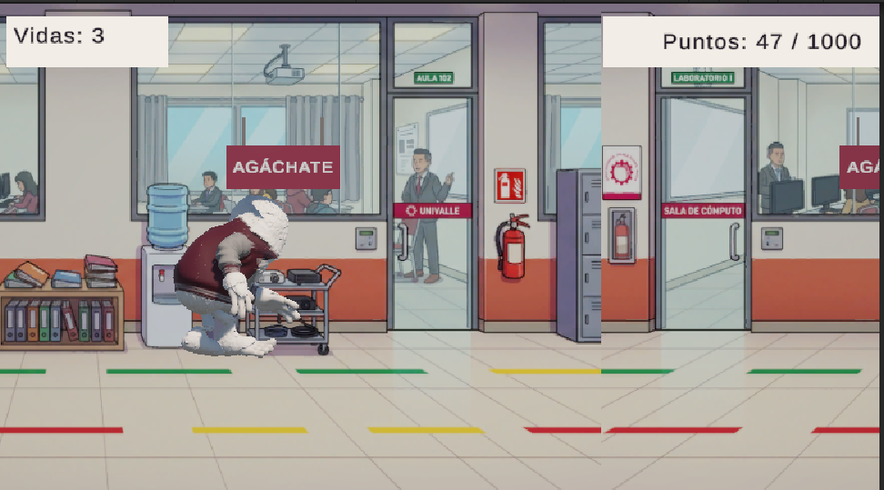
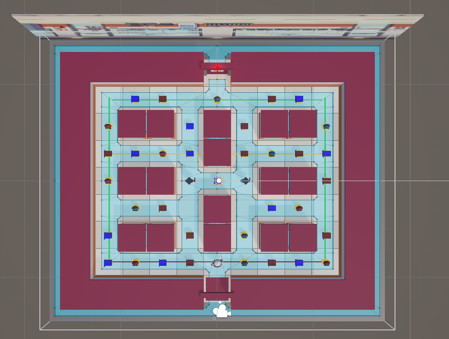
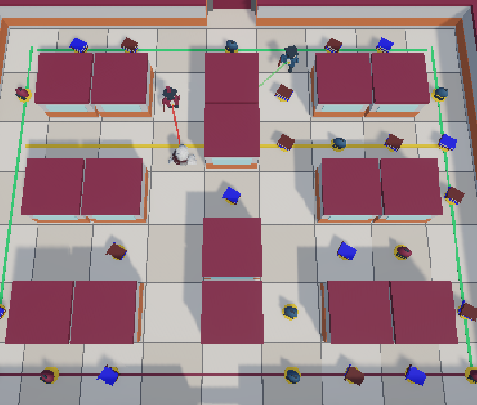
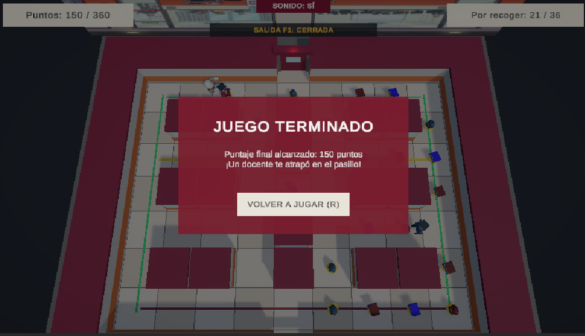

Juego 1: Yeti Runner
Flecha Arriba para saltar libros y mochilas; Flecha Abajo para agacharse bajo carteles.
PORTAL ARCADE 3D · JOSE MARTIN LEAÑO
Dos desafíos universitarios en un solo portal. Elige un juego y presiona START para comenzar.
Acompaña al Yeti universitario en dos entregas desarrolladas en Unity: una carrera infinita por los pasillos del campus y un laberinto 3D estilo Pac-Man con enemigos guiados por Pathfinding y Raycasting.

01 / UNIVERSO Y ESCENARIOS DEL CAMPUS
Nuestro protagonista es un estudiante Yeti tranquilo pero algo distraído. En el Juego 1 (Endless Runner) debe correr contra el reloj por los corredores de la universidad esquivando mochilas, libros y carteles para llegar a su defensa.
En el Juego 2 (Laberinto 3D estilo Pac-Man), el campus se transforma en un laberinto de 11×9 celdas donde debe recolectar los 36 puntos distribuidos en los pasillos antes de cruzar la puerta de salida F1, evitando a dos enemigos que patrullan y lo persiguen al detectarlo.



02 / PROTAGONISTA 3D
Su pelaje blanco y su chaqueta universitaria guinda y gris lo distinguen en todo el campus. El mismo modelo 3D animado protagoniza ambos juegos, adaptando su máquina de estados a cada género.

03 / CONTROLES Y ARQUITECTURA DE JUEGO
Haz clic dentro del área de juego después de presionar START para activar el teclado.
Flecha Arriba para saltar libros y mochilas; Flecha Abajo para agacharse bajo carteles.
Desplázate por el laberinto en las 4 direcciones para recoger los 36 puntos (360 pts) y abrir la salida F1.
En el laberinto 3D puedes presionar la tecla R en cualquier momento para reiniciar la partida al instante.



04 / SECCIÓN JUEGO 1 · ENDLESS RUNNER
Alcanza 1000 puntos conservando tus 3 vidas. Presiona el botón START situado encima del contenedor para cargar el juego en esta misma página.

05 / SECCIÓN JUEGO 2 · LABERINTO ESTILO PAC-MAN
Recoge los 36 puntos del laberinto (360 pts) para abrir la salida F1 sin ser atrapado por los enemigos. Presiona START encima del área de juego para iniciar.